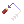
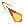
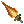
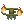
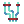
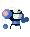
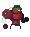

"Simple, effective, lethal."
Primary-Fire: Shotgun. Fires a spread of 6 pellets, each dealing 9 damage.
Secondary-Fire: Resonance Hammer. Charge up a short-range melee attack that can deflect projectiles and bullets. Deals 30 damage.
SPECIAL: Firing your shotgun right as Resonance Hammer is unleashed activates a Naildriver, massively reducing spread. Missing the window instead results in a Scattershot, increasing spread instead. All boosted pellets deal 1.7X damage, and move faster.
Steeltoes are simple to use hosts that can deal consistent damage at range. Naildrivers and Scattershots offset the otherwise low damage of the shotgun, and can be used to set up powerful Trickshots. Aditionally, out of all of the bots that can reflect projectiles, Steeltoes have some of the best reflecting capability. Resonance-Hammered Router grenades deal great impact damage, as do enemy Steeltoe bullets. Their main weaknesses are their severe lack of splash damage, and their relative frailty, not having the physical bulk of Deadlifts or the movement speed and I-Frames of Routers.
Induction Barrel - Sets your pellets on fire, converting them into piercing flames!
Stacked Shells - Surely more shells can fit in the gun, right? Gain an extra barrel (or three), and unload all of them at once!

Ricochet Shells - Bullets bounce off walls. What kind of idiot thinks bullets don't bounce off walls?
Primary-Fire: Grenade Throw. Throw a pipe bomb that deals high (up to 85) impact damage with a long stun duration, before exploding shortly afterwards (30 damage). Heavily affected by momentum, and gains damage with speed.
Secondary-Fire: Drift. Charge up a fast dash with I-Frames. Leave behind a flash of burning rubber that can deal damage and deflect shots.
SPECIAL: Tokyo Drifting - Fast, slippery movement.
Ah, the simple Router. Ever since 1992, humanity has dedicated huge R&D budgets to figuring out the most optimal weapons to be thrown elegantly from a wheeled vehicle. Many of our greatest developments, from the humble Red Koopa Shell to the fearesome Warthog of the UNSC, are simply extentions of the inherent human need to combine lethality and mobility into one package. Routers represent the pinnacle of almost a half century of vehicular-weapon evolution, throwing compact and lethal orange rectangles packed full of homebrewed ANFO. They're also evasive hosts, with an invincible dash that can pass through hazards or escape from foes.

Shaped Charges - Converts regular pipebombs into sharpened bricks, being unable to explode but dealing heavy impact damage
Self-Preservation Override - Become the brick. Deal speed-based contact damage to both enemies and yourself.
Spin Control - Give it a little English. Grenades bounce between enemies on impact, ricocheting about. Plus, they can even auto-aim after rebounding off of walls!
"Burn it all down..."
Primary-Fire: Flamethrower. Fire raw hydrazine at your enemies, building up pressure over time. Inflicts pushback, which can be used to rocket-boost around. While in use, the Flamethrower causes Heat buildup. High heat values cause Aphids to inflict contact damage.
Secondary-Fire: Tar. Spit out highly flammable tar that slows down enemies, and can be set alight to inflict fire damge.
SPECIAL: Overheat. At maximum heat or when killed, Aphids will begin an explosive self-detonation sequence that deals heavy AoE damage, at the cost of their life. Overheating can also be manually triggered by Primary-Fire and Secondary-Fire at the same time.
Aphids were once mild-mannered wheeled watering cans that promised to eliminate sprinklers as the lawn-irrigator of choice. After the Patch, they became fanatical zealots who now seek to "prune away" those they deem unfit. Most of the time, this consists of eradicating any and all plant life that does not comply with their personal aesthetic decisions. They're my personal second-favorite RAM bot, right behind Tachi.

Internal Combustion - Converts your flamethrower into a handheld rocket engine, granting heavily increased range, recoil, and heat buildup.
Second Sun - This is a reward for a side quest, and it's worth all of the effort. Second Sun DOUBLES your maximum heat capacity, and causes you to incinerate any and all enemies foolish enough to exist within your proximity at high heat."Work harder, not smarter"
Primary-Fire: Jab. Short close-range punch that knocks enemies back and deflects projectiles. Charge to deal bonus damage and bonus launch force.
Secondary-Fire: Grapple. Fire out a grappling hook that can affix to enemies, walls, and even explosive barrels! Hold the button to reel in, pulling yourself toward walls or pulling enemies towards yourself.
SPECIAL: Juggling - Juggle grappled enemies with Jab, building up speed and damage, before launching it with a Charge Jab.
It turns out you need shockingly little in the realm of brains when you posess the unmatched robotic brawn of the Deadlift. They spend most of their free time lifting weights and fishing with their grappling hooks, but make no mistake; Deadlifts are a force to be reckoned with. If they grab you, they will pummel you with their hydraulic fists until your hull shatters and your circuit board is left littered all across the floor. They can even use their punches to send shotgun pellets, grenades, and even Aphid flames right back at their source.

Cable Managment - Its a winch, not a spaghetti roller.
